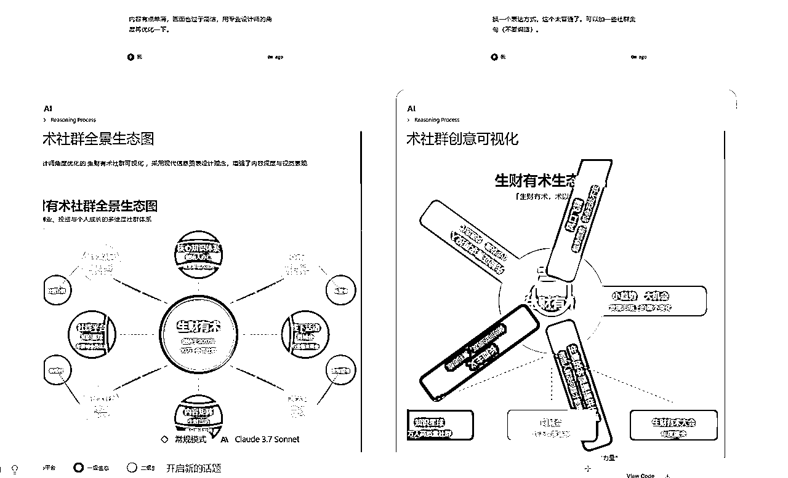

来源：https://vo2ca68sdm.feishu.cn/docx/KuMadvdMdoE33LxEhxicWeQ9n3d
Claude 3.7 的画图能力可谓是一骑绝尘。这篇文章会分享一下我收集整理以及自己挖掘到的各种使用 Claude 3.7 提示词进行可视化的例子。
说明一下，这里的画图能力并不是像 midjourney/SD 一样“画”一幅画，而是用基于 SVG/HTML/XML 等文本编码的方式进行图表绘制。
可视化（物品、概念、书籍、电影...）
可以说是说最简单最基础的指令了：
可以基于当前内容进行分支编辑，对比看看不同prompt带来的改进：

这里提一句，画的 SVG 可以用 https://inkscape.org/ （免费开源，win/mac 可用）进行编辑：
还可以导入到 PPT 里进行编辑：

请你创建一个4：3的页面模板，模拟PPT，遵循设计的最佳实践。
先制作一个模板（16：9也可以，不过画布显示不太友好我就改成4：3了）：
可以基于模板进行变种：

然后挑选一个喜欢的模板开始制作：
基于这个模板，生成一个8页的PPT，内容是像普通用户介绍一下大语言模型，内容要生动有趣浅显易懂。

用这个模板帮我生成一个 8 页的 PPT，介绍一下道德经。
还记得吗？我们可以直接在 PPT 内加载并转换成可编辑的形状：
用 three.js 帮我绘制一个 3d 的火箭形象，要有炫酷的光效

绘制一个城堡，并且视角动态变化
还有这个玩法，但是我没试过，贴在这里留给感兴趣的人。
用html帮我生成一个手册，介绍一下常见的prompt编写技巧。可以用cdn，界面要现代化，遵循UIUX的最佳实践，使用响应式布局。
找了一篇小排老师的文章，生成效果如下：

请为一位即将在 3 月 14 日迎来 30 岁生日的程序员生成一段可独立运行、可直接保存为 HTML 文件并在浏览器中打开的页面代码，作为独一无二的生日祝福。页面应包括以下要求与元素： 1. 风格与主题： • 整体使用黑客帝国 (The Matrix) 风格的 UI/UX 设计，突出「神秘感」、「矩阵风」和「未来科技感」。 • 使用 Tailwind CSS 和 Font Awesome 的 CDN。 • 在视觉上呈现黑暗背景搭配绿色或荧光色系，突出高对比度，保持良好可读性和访问性。 2. 内容要点： • 明确表达「30 岁生日」以及「3 月 14 日」这两个核心信息，并设计以「程序员」身份为主题的祝福文案。 • 可以添加合适的自定义文案，突出独特的祝福氛围。 • 参考黑客帝国风格，可在合适位置插入一些霓虹灯、未来感的元素或字符雨 (Matrix Rain) 效果等。 3. 结构与技术细节： • 使用语义化的 HTML 标签（header、main、footer 等）；若有必要，可使用少量 JavaScript 提升交互。 • 通过 Tailwind CSS 的实用类 (utility-first classes) 完成主要的样式控制，不必冗余自写 CSS。 • 集成 Font Awesome（可添加适合主题的图标，如编程相关或酷炫科技图标）。 • 需包含完整的示例 HTML 结构（、、、），包括 meta viewport 等必需标签，确保在现代浏览器和移动端浏览体验良好。 4. 设计与交互： • 界面适配多端设备（PC/移动端）。 • 页面内可以简单地展示个人信息、生日祝福文字、主题装饰等；如需插入动画或特效，可在代码中简要说明其作用。 5. 交付形式： • 最终输出应当是一段可直接复制到本地并命名为「birthday.html」后打开即能运行的完整静态页面代码。 • 如有额外的解释，可以附在注释中，或在输出生成完后附加写简要说明。 根据以上要求，请生成符合黑客帝国主题、体现「30 岁」「3 月 14 日生日」信息，且带有 Tailwind CSS 与 Font Awesome CDN，具有独特祝福文案、可直接运行的完整静态 HTML 页面代码。

这个也是来源于日推。
写一个关于挣钱的效率和持久化程度的四象限整理 xml，结果以可在线编辑的 drawio 格式输出！
把生成的内容保存成 xml 文件，然后用 drawio 打开：

这个prompt的来源是日本的一个推友，在中文自媒体圈子我还没有看到有人在用：
原始 prompt：
以下の内容を、超一流デザイナーが作成したような、日本語で完璧なグラフィックレコーディング風のHTMLインフォグラフィックに変換してください。情報設計とビジュアルデザインの両面で最高水準を目指します
手書き風の図形やアイコンを活用して内容を視覚的に表現します。
@import
url('https://fonts.googleapis.com/css2?family=Kaisei+Decol&family=Yomogi&family=Zen+Kurenaido&display=swap…');
```
### 4. レイアウト
- ヘッダー：左揃えタイトル＋右揃え日付/出典
- 3カラム構成：左側33%、中央33%、右側33%
- カード型コンポーネント：白背景、角丸12px、微細シャドウ
- セクション間の適切な余白と階層構造
- 適切にグラスモーフィズムを活用
- 横幅は100%にして
## グラフィックレコーディング表現技法
- テキストと視覚要素のバランスを重視
- キーワードを囲み線や色で強調
- 簡易的なアイコンや図形で概念を視覚化
- 数値データは簡潔なグラフや図表で表現
- 接続線や矢印で情報間の関係性を明示
- 余白を効果的に活用して視認性を確保
## 全体的な指針
- 読み手が自然に視線を移動できる配置
- 情報の階層と関連性を視覚的に明確化
- 手書き風の要素で親しみやすさを演出
- 視覚的な記憶に残るデザイン
- フッターに出典情報を明記
## 変換する文章/記事
翻译成中文版：
请根据以下设计与排版规范，制作一份超一流设计师水准的中文手绘风格HTML信息图（Infographic）。务必遵循所有要求：